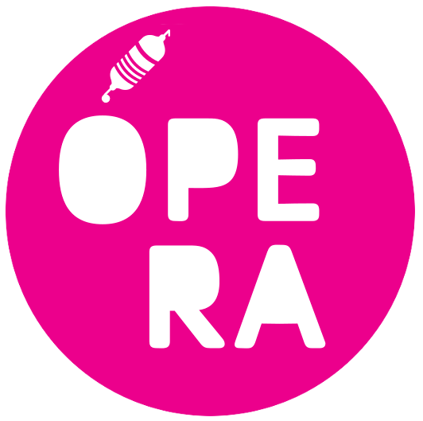

Ópera es una placa con microcontrolador diseñada por el ingeniero y artista Yurián Zerón, creada específicamente para resolver las necesidades técnicas de la producción artística contemporánea y la experimentación sonora. A diferencia de las soluciones de hardware comercial genérico, la placa Ópera nace de la práctica artística en México, optimizando la comunicación entre el mundo físico (sensores y actuadores) y los entornos de programación visual y s onora de tiempo real.
Colaboración y Diseño de Interfaz Un pilar fundamental en la usabilidad y adopción de esta plataforma es su entorno de interacción. La interfaz de usuario fue desarrollada por Ernesto Romero, quien diseñó un puente lógico y visual que permite a los creadores gestionar parámetros complejos de hardware sin perder el enfoque en el proceso creativo. Esta capa de software facilita la configuración de entradas y salidas, permitiendo una transición transparente entre el código y la acción física.